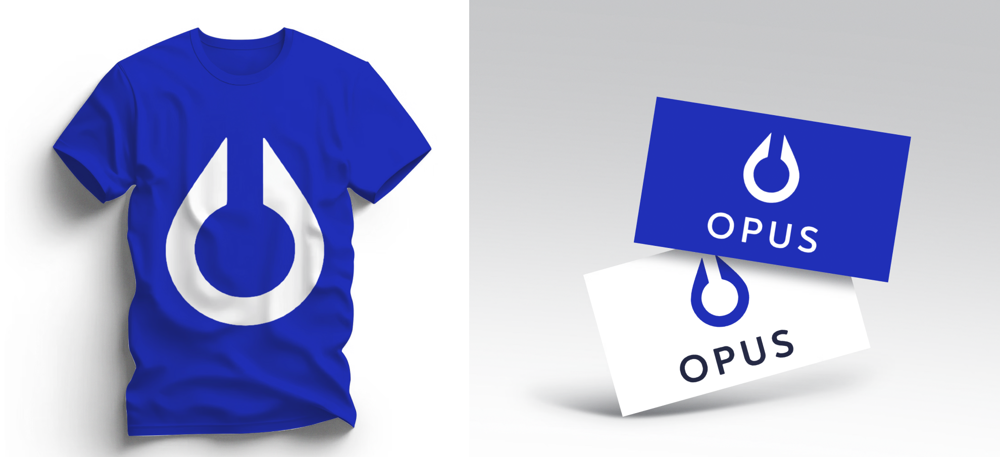

Guia de Estilos
Nesta seção, apresentamos a identidade visual do projeto, destacando o design, as cores e os detalhes que transmitem confiança e segurança como prioridades. O minimalismo também ganha destaque. Tudo isto foi desenvolvido utilizando Figma, MockupBro, Vetorização e mais.
Logo:

Identidade Visual:



Paleta de Cores:

Tipografia: